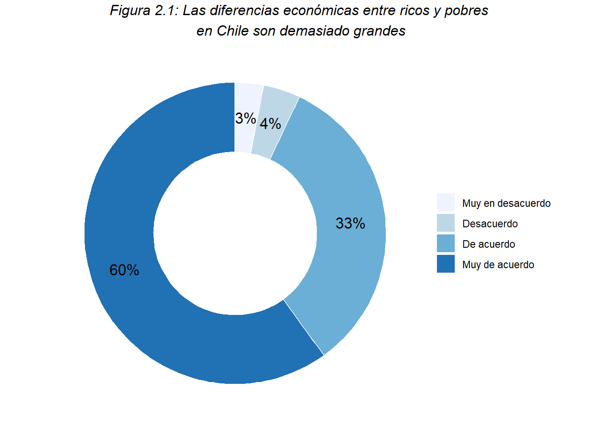
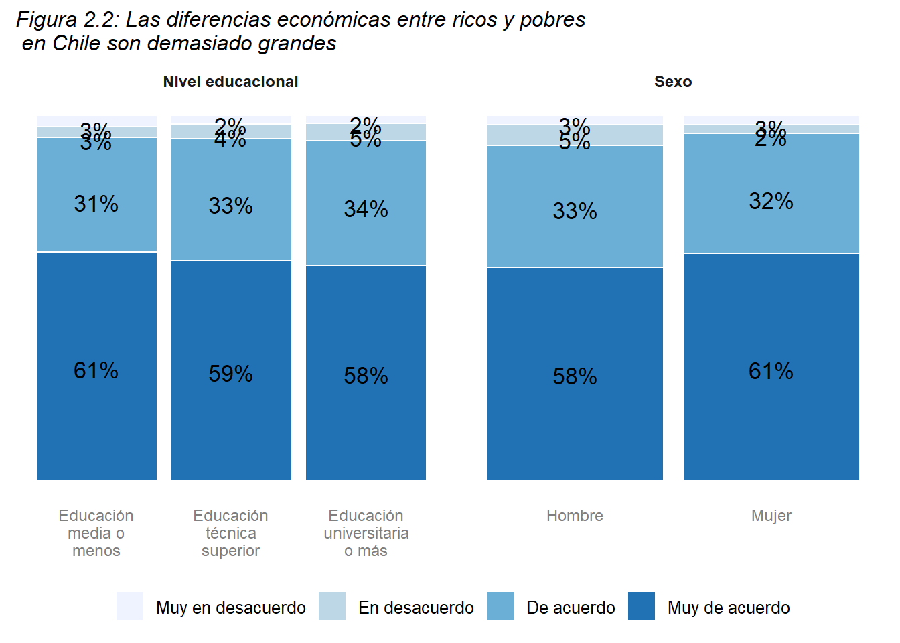
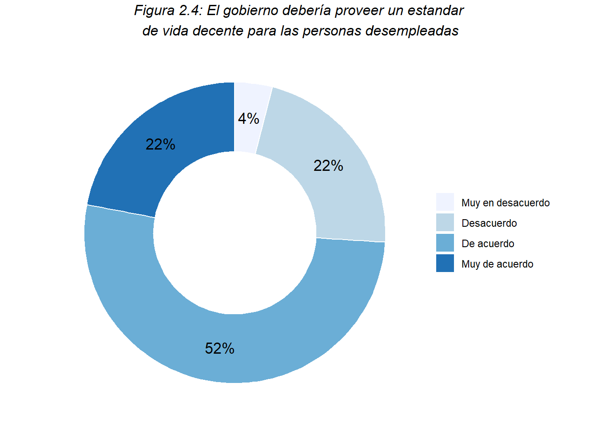
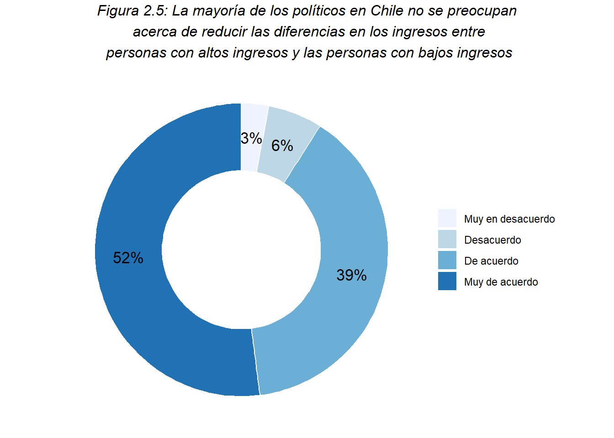
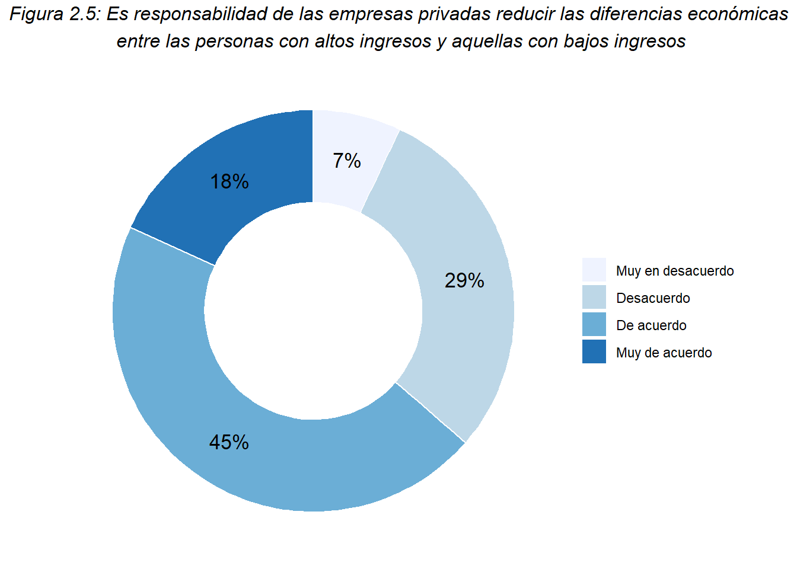
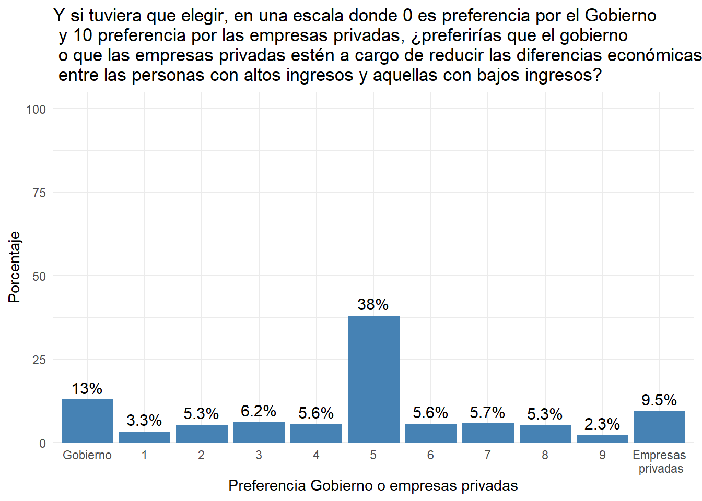
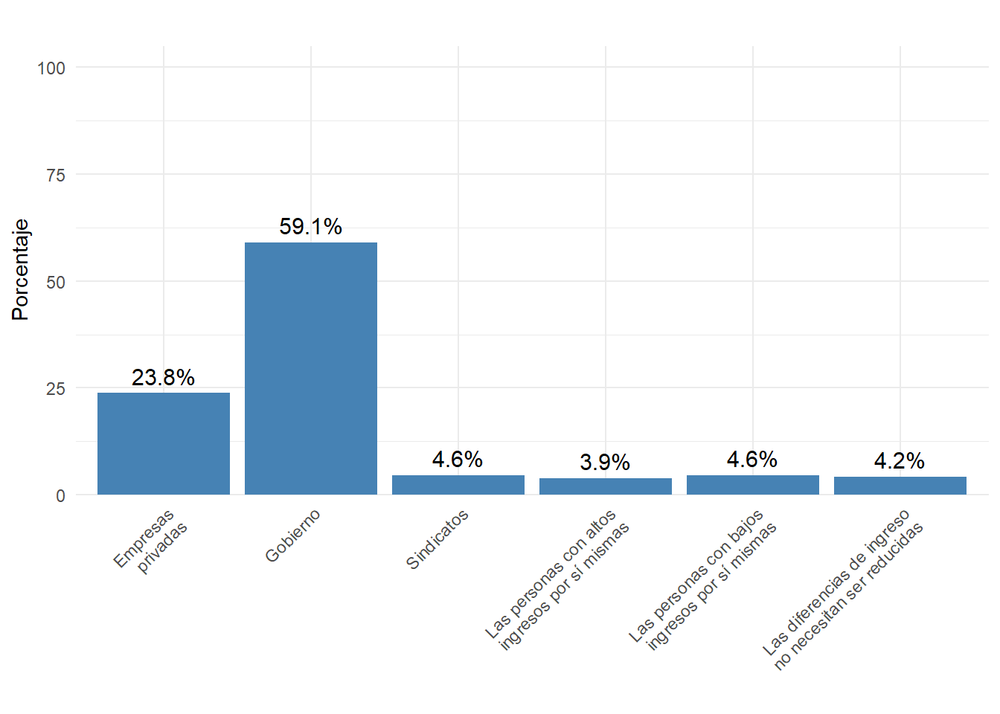
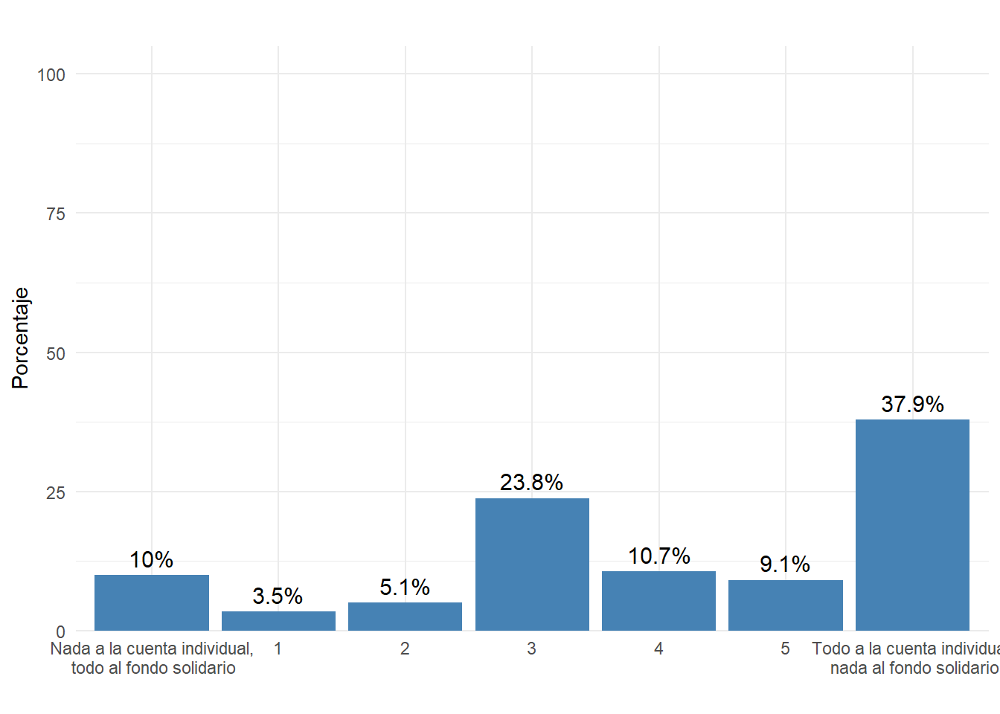
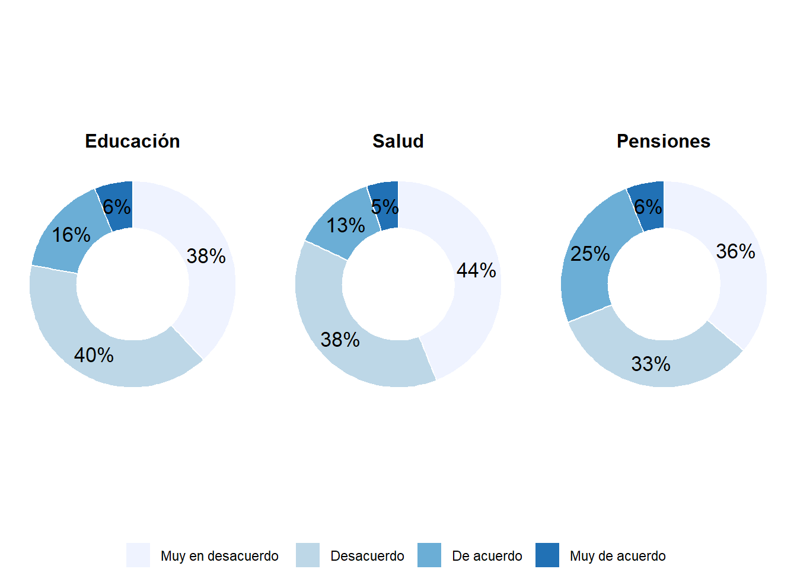

4 Desigualdad
En este módulo se abordan distintas preguntas relacionadas con la desigualdad económica, como la percepción de desigualdad, las preferencias redistributivas y la justicia de mercado.
Para contextualizar estas preguntas, es necesario precisar que la desigualdad objetiva hace referencia a las diferencias estructurales en la distribución de recursos, tales como el ingreso, la riqueza y el acceso a la educación, las cuales pueden ser medidas empíricamente a través de indicadores cuantitativos. En contraste, la desigualdad subjetiva se relaciona con la manera en que los individuos perciben y experimentan estas diferencias, lo que no siempre coincide con su magnitud real.
4.1 Percepción de desigualdad
La percepción de desigualdad no es un reflejo exacto de las condiciones materiales, sino una construcción social influida por múltiples factores, como la experiencia individual, los medios de comunicación o los discursos políticos. En sociedades con altos niveles de movilidad social o con narrativas meritocráticas más profundas, la percepción de desigualdad puede ser menor de lo que realmente es. Por el contrario, en contextos donde se enfatizan las barreras estructurales al éxito, o donde no se cumplen las promesas meritocráticas, las personas pueden percibir mayores niveles de desigualdad.
En general, las personas están Muy de acuerdo (60%) o De acuerdo (33%) con que en Chile las diferencias económicas entre ricos y pobres son demasiado grandes, lo que da cuenta de una alta percepción de desigualdad en el país.

Al analizar las diferencias por nivel educacional, el gráfico da cuenta de que en medida que este aumenta, disminuye levemente el grado de Muy de acuerdo con que las diferencias económicas entre ricos y pobres son demasiado grandes. Así mismo, las mujeres también perciben una mayor desigualdad que los hombres.
4.2 Preferencias redistributivas
Las preferencias redistributivas expresan el grado de apoyo de los individuos a políticas destinadas a reducir las desigualdades económicas entre ricos y pobres, tales como impuestos progresivos, transferencias sociales y provisión de bienes públicos. Estas preferencias están determinadas por una combinación de factores estructurales, como la clase social o el nivel educacional, y subjetivos, como la percepción de desigualdad y la confianza en las instituciones. En contextos donde la desigualdad es vista como injusta o como un obstáculo para la cohesión social, el respaldo a la redistribución tiende a ser mayor, mientras que en sociedades con una fuerte creencia en la meritocracia, el apoyo a estas políticas suele ser más bajo. En este apartado se evalúan los roles que distintos actores sociales pueden tomar en la tarea de reducir las diferencias económicas entre ricos y pobres.
4.2.1 Rol del gobierno
Al analizar el rol que debería tomar el gobierno en reducir las diferencias económicas entre ricos y pobres, la gran mayoría de las personas (74% Muy de acuerdo + De acuerdo) están de acuerdo con que es su responsabilidad.
Asimismo, el 74% de las personas están De acuerdo o Muy de acuerdo con que el Gobierno debería proveer un estándar de vida decente para las personas desempleadas.


Finalmente, la mayoría de las personas encuestadas señalan estar de acuerdo (39%) o muy de acuerdo (52%) con que los políticos no se preocupan acerca de reducir las diferencias en los ingresos entre ricos y pobres.
4.2.2 Rol de las empresas privadas

4.2.3 ¿Y si tuviera que elegir entre Gobierno o empresas?

Al tener que elegir entre si el gobierno o las empresas privadas deberían estar a cargo de reducir las diferencias económicas, la mayoría de las personas (38%) le asignan igual importancia a ambos actores. Sin embargo, la gente que le asigna toda su preferencia al gobierno es levemente mayor (13%) que quienes preferiría que estén a cargo las empresas privadas (9.5%)
4.2.4 Mirando la lista a continuación, ¿quién cree que debería tener la mayor responsabilidad en reducir las diferencias de ingreso entre las personas con altos ingresos y las personas con bajos ingresos?

Al cambiar la forma de preguntar para no forzar elegir entre gobierno y empresas, destaca que el 59.1% de las personas preferirían que el Gobierno tome la responsabilidad de reducir las diferencias de ingreso.
4.2.5 Pensiones
En Chile un 10% de los sueldos se descuenta para ahorro previsional (pensiones). Actualmente se está discutiendo una reforma que propone sumar un 6% adicional con cargo al empleador. El principal tema de esta discusión es cómo repartir este 6%: si debería destinarse a un fondo solidario (para disminuir las brechas entre las pensiones), o a las cuentas individuales (para incrementar los ahorros personales de cada trabajador a futuro).
¿Cómo distribuiría Ud. este 6%? Marque abajo su preferencia, donde 0 significa que nada se asigna a la cuenta individual y todo al fondo solidario, mientras 6 es todo a la cuenta individual y nada al fondo solidario

Al analizar las preferencias de las personas por la reforma al sistema de pensiones, destaca que la mayoría de las personas señala que no le asignarían ningún porcentaje al fondo solidario de la propuesta original. Sin embargo, un 10% señala que todo este porcentaje extra estaría dispuesto a asignarlo al fondo solidario. De todas maneras, destaca que un 23.8% estaría dispuesto a un reparto equitativo de los excedentes de la reforma entre la cuenta individual y el fondo solidario.
4.3 Justicia de mercado
La justicia de mercado se basa en la idea de que las recompensas económicas deberían ser el resultado de la competencia y el esfuerzo individual, sin interferencias estatales que alteren los resultados. Esta concepción legitima las desigualdades económicas al enmarcarlas como el producto natural de diferencias en talento, habilidad o esfuerzo. En sociedades donde predomina esta visión, la desigualdad es menos cuestionada y las demandas redistributivas suelen ser más débiles. Sin embargo, cuando se percibe que el mercado no garantiza condiciones equitativas de partida o que los privilegios estructurales distorsionan las oportunidades, la justicia de mercado es objeto de crítica y emergen mayores demandas por intervención estatal en la provisión de recursos y recompensas.
¿Está bien que en Chile las personas con mayores ingresos puedan tener mejor acceso a educación, salud o pensiones que las personas de ingresos más bajos?

Al analizar las preferencias de las personas sobre la justicia de mercado, destaca que la mayoría de las personas señalan que están muy en desacuerdo o en desacuerdo (78% sobre educación, 82% en salud y 69% en pensiones) con que está bien que las personas de mayores ingresos accedan a mejores servicios sociales que las personas de bajos ingresos. Asimismo, destaca que el mayor grado de acuerdo se da en pensiones (31%), dando cuenta de un mayor valor al mercado y esfuerzo individual en este item, lo que va en línea con investigaciones anteriores y también con las otras preguntas sobre pensiones ya presentadas.